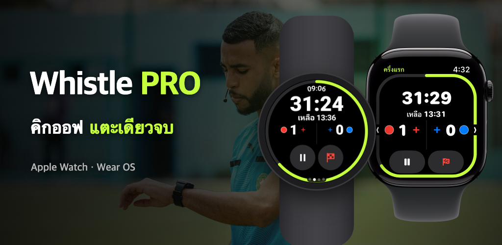

Whistle PRO
สวมนาฬิกาแล้วลงสนามได้เลย
ตัวจับเวลาและบันทึกการแข่งขันบน Apple Watch และ Wear OS สำหรับผู้ตัดสินฟุตบอล
ดาวน์โหลดบน App Store
Google Play เร็วๆ นี้

สวมนาฬิกาแล้วลงสนามได้เลย
ตัวจับเวลาและบันทึกการแข่งขันบน Apple Watch และ Wear OS สำหรับผู้ตัดสินฟุตบอล

ทั้งฟุตบอลสมัครเล่น สโมสร และลีกเยาวชน คุมเกมได้ทั้งเกมด้วยนาฬิกาเรือนเดียวโดยไม่ต้องใช้โทรศัพท์
หยุด/เล่นต่อ บันทึกประตู หรือย้อนกลับด้วยปุ่ม มงกุฎ หรือขอบหน้าปัดขณะวิ่ง (PRO) บน Apple Watch และนาฬิกา Wear OS เช่น Galaxy Watch
รองรับครึ่งแรก/ครึ่งหลัง แบบควอเตอร์ ต่อเวลาพิเศษ และดวลจุดโทษ จับเวลาที่เกมหยุดแยกไว้แล้วแนะนำทดเวลาให้
ข้อมือจะสั่นเตือนก่อนหมดเวลา เมื่อพักครึ่งจบ และเมื่อผู้เล่นที่ออกชั่วคราวกลับลงสนามได้
บันทึกประตู ใบเหลือง ใบแดง และการเปลี่ยนตัว พร้อมทีมและหมายเลขเสื้อ ใบเหลืองใบที่สองจะเปลี่ยนเป็นไล่ออกให้อัตโนมัติ
เริ่มจากมาตรฐาน FIFA แล้วปรับเวลาแข่ง จำนวนผู้เล่น จำนวนการเปลี่ยนตัว และการออกชั่วคราว จากนั้นบันทึกเป็นพรีเซ็ต
อัตราการเต้นของหัวใจ ระยะทาง สปรินต์ และฮีตแมปการเคลื่อนที่ถูกเก็บไว้กับบันทึกการแข่งขัน และบันทึกเป็นการออกกำลังกายในแอปสุขภาพ (iPhone) หรือ Health Connect (Android)
เมื่อจบเกม แชร์รายงานที่สรุปประตู ใบเหลือง ใบแดง การเปลี่ยนตัว และกติกาที่ใช้ได้ทันทีจากโทรศัพท์
ในแท็บ [แผนที่] ของรายละเอียดการแข่งขัน จัดมุมสนามทั้งสี่ให้ตรง แล้วดูฮีตแมปการเคลื่อนที่ของคุณบนภาพถ่ายดาวเทียม
เกมที่จัดตำแหน่งสนามแล้ว สร้างวิดีโอรีเพลย์การเคลื่อนที่ของคุณยาว 15 วินาทีแล้วโพสต์ลงโซเชียลได้ทันที
เลือกสีชุดของทั้งสองทีมบนนาฬิกาก่อนเขี่ยลูก และแก้ไขบนโทรศัพท์ได้หลังจบเกม
ฟีเจอร์ที่จำเป็นต่อการคุมเกมใช้ได้ฟรี ส่วนการบันทึกและวิเคราะห์อยู่ใน PRO
ไม่ต้องสมัครสมาชิก
รายเดือนหรือรายปี · ทดลองใช้ฟรี 7 วัน
สมัครสมาชิกได้ในแอปบนโทรศัพท์ และยกเลิกได้ทุกเมื่อในการตั้งค่าบัญชี App Store หรือ Google Play
ไม่มีบัญชีและไม่มีเซิร์ฟเวอร์ บันทึกการแข่งขันและข้อมูลสุขภาพส่งกันระหว่างนาฬิกากับโทรศัพท์ของคุณเท่านั้น
ดูนโยบายความเป็นส่วนตัว